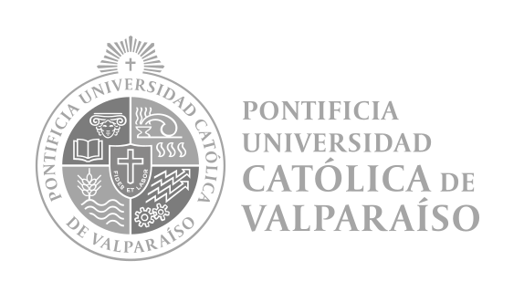

<!DOCTYPE html>
<html lang="es"
style="display: inline-block; width: 1000px; height: 100px; background-color: #FFFFFF; padding: 10px; text-align: left; font-size: 25px; font-family: Lato, sans-serif; margin-left:60px; line-height: 1.5;"></html>>
<head>
    <meta charset="UTF-8">
    <meta name="viewport" content="width=device-width, initial-scale=1.0">
    <title>accesibilidad-inclusion</title>
</head>
<header>
    <h1 style="font-size: 80px;">Acerca</h1>
     
</header>
<body>
    <p> Este núcleo multidisciplinario de investigación se plantea como espacio de trabajo la relación del ser humano con el medioambiente construído. Desde una mirada crítica e inclusiva examinamos los productos, procesos, espacios y servicios para imaginar y proponer formas más inclusivas y accesibles que aseguren la mayor participación posible. Nuestro ámbito de trabajo engloba políticas públicas, urbanismo, arquitectura y diseño como todo el “entorno construido” y su relación con las ciencias aplicadas de la ingeniería, educación, salud y ciencias jurídicas.</p>
    <p> Nuestro núcleo desarrolla proyectos de arquitectura, diseño, ingeniería, educación y salud insertos en modelos de aplicación que ofrezcan solución a problemáticas actuales de la sociedad tales como modelos con sostenibilidad social y participación de grupos históricamente excluidos.</p>
    <h2 style="color: grey;">Objetivos</h2>
        <ol>
            <li>Generar conocimiento interdisciplinario para ofrecer soluciones a problemáticas de la sociedad actual desde modelos de sostenibilidad e inclusión social y accesibilidad universal.</li>
            <li>Establecer un modelo de investigación interdisciplinaria construido desde la cohabitación humana y la tecnología, que promueva la participación de las personas en el diseño del medioambiente.</li>
            <li>Diseñar propuestas de innovación para el desarrollo inclusivo desde el ámbito de las ingenierías, las ciencias sociales (educación y lenguaje), la salud y las ciencias jurídicas, que potencien la participación de las personas en la generación de políticas públicas sobre urbanismo, arquitectura y diseño.</li>
         </ol>
    <h2 style="color: grey;">Áreas de Investigación</h2>
    <p>
        <ul>
            <li>Educación e Inclusión → modelos y apoyos a la inclusión</li>
            <li>Diseño e Ingeniería → Apoyos tecnológicos, Diseño Universal</li>
            <li>Arquitectura y Urbanismo → Movilidad y Hospitalidad</li>
            <li>Derecho y Políticas Públicas → Modelos de desarrollo humano, consideraciones en el ámbito de los derechos</li>
            <li>Salud → Modelos y productos para el aprendizaje del autocuidado</li>
        </ul>
    </p>
    <button style="background-color: #f6c911; border-radius: .25em; border: 0px; padding: 10px 15px; font-weight: bold;">Donate</button>
    <p>Este núcleo confía en las donaciones de la comunidad para mantener los diversos proyectos como iniciativas públicas de código abierto.</p>
</body>
<footer> 
    <br />
    <p style="font-size: 15px; text-align: center;"><strong>Accesibilidad & Inclusión</strong> 2023 ~ Promoviendo espacios inclusivos</p>
<div class="logo-pucv-bn">
    <p style="text-align: center; width: 250px; height: 100px;"> </p>
</div> 
</footer>

</html>